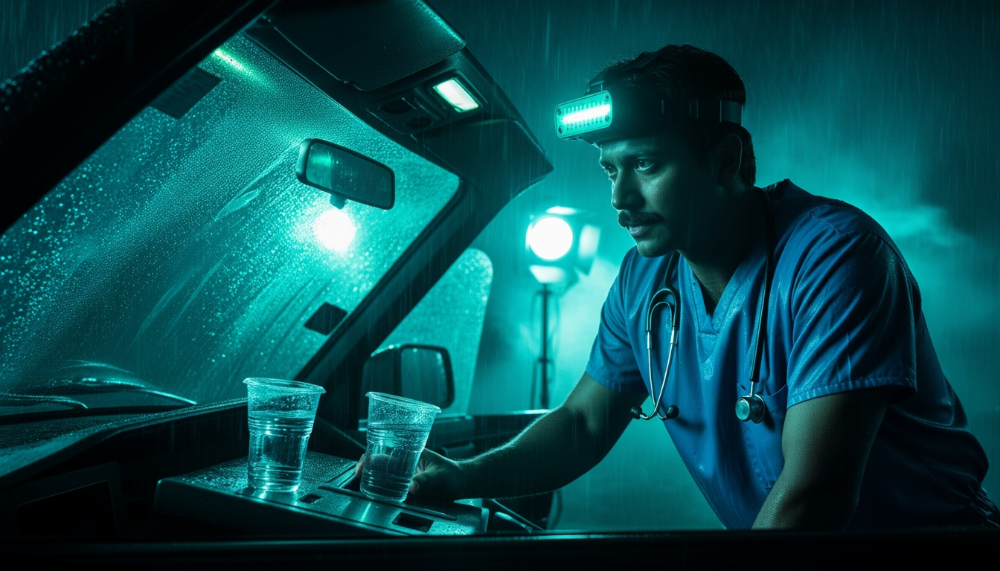
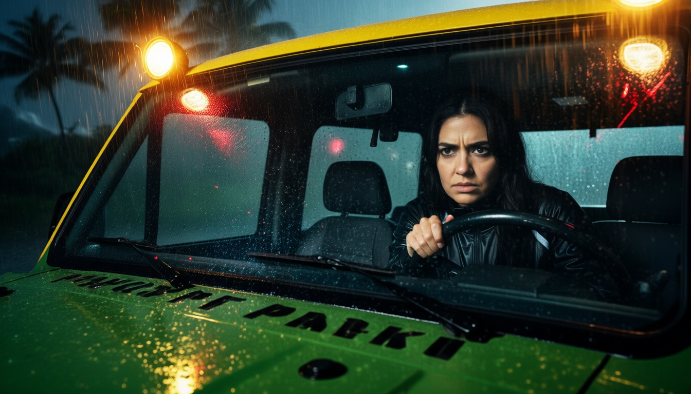
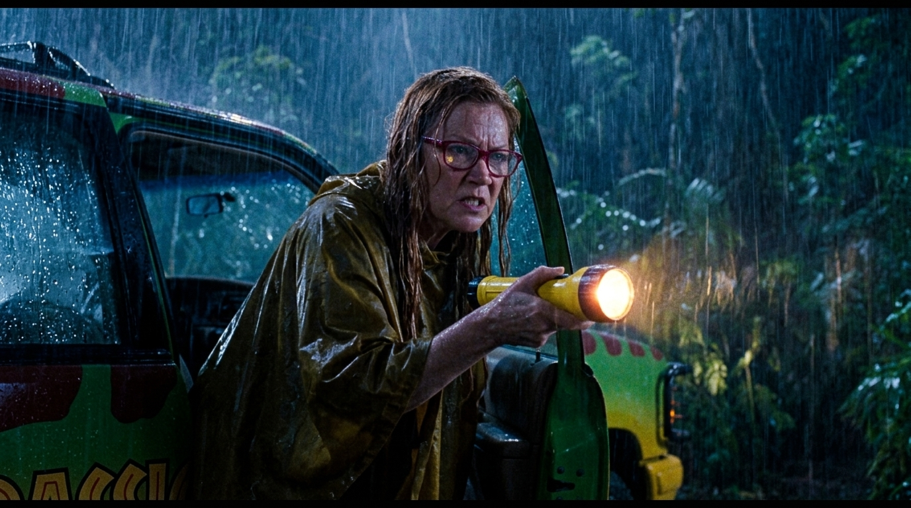
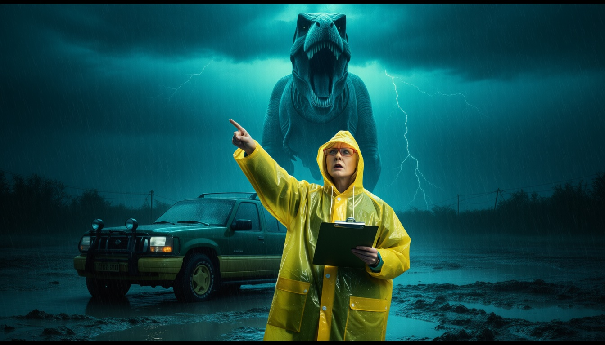

1993 Spielberg Tropical Night Storm · Damon, Gigi, Ajay, Sheren & T-Rex · Ingredient Prep: v1 Archived · Render Time: Queued for v2 rebuild with Nomads-only casting & SyncNet gating
Original movie frames extracted directly from the scene to match camera angles, lenses, lighting contrast, and color palette.
Every keyframe, spoken line, duration, and prompt queued for MiniMax H3 prior to rendering.

JP_JP_01 · Ajay (5.9s)
Keyframe: jp_shot01b_ajay_explorer.jpg
Line: "One minute, yaar! Those shockwaves in the water cup—classic subthalamic tremor! Wait till I check!"
Prompt: <Picture 1> is the exact starting frame of this photorealistic 35mm live-action movie scene.
<Audio 1> is the exact spoken dialogue audio track for Ajay in <Picture 1> and is reused verbatim.
Keep every character face, costume, lighting, lens, and set geometry strictly faithful to <Picture 1>. 50mm night interior shot locked to <Picture 1>: Ajay in rain-soaked blue scrubs, stethoscope, and glowing surgical headlamp leans over the two trembling plastic cups of water on the Explorer dashboard under cold blue-green storm light while speaking <Audio 1> excitedly with concentric vibration ripples shaking the water surface.
Keep camera framing anchored to <Picture 1>, natural live-action performance, exact lip sync to <Audio 1>, subtle 35mm film grain.

JP_JP_02 · Sheren (5.9s)
Keyframe: jp_shot02_sheren_explorer.jpg
Line: "Why are we going three miles an hour? Relax. I'm taking us off the track. No brakes."
Prompt: <Picture 1> is the exact starting frame of this photorealistic 35mm live-action movie scene.
<Audio 1> is the exact spoken dialogue audio track for Sheren behind the steering wheel in <Picture 1> and is reused verbatim.
Keep every character face, costume, lighting, lens, and set geometry strictly faithful to <Picture 1>. 35mm windshield shot locked to <Picture 1>: Sheren in her black waterproof jacket grips the steering wheel tightly inside Explorer #04 during torrential night rain as yellow headlights and windshield wipers flash across rain-lashed glass while she speaks <Audio 1> impatiently.
Keep camera framing anchored to <Picture 1>, natural live-action performance, exact lip sync to <Audio 1>, subtle 35mm film grain.

JP_JP_03 · Gigi (6.6s)
Keyframe: jp_shot05_gigi_flashlight.jpg
Line: "Sheren, slow down! Keep your hands at ten and two, and put that red flare away!"
Prompt: <Picture 1> is the exact starting frame of this photorealistic 35mm live-action movie scene.
<Audio 1> is the exact spoken dialogue audio track for the speaking character in <Picture 1> and is reused verbatim.
Keep every character face, costume, lighting, lens, and set geometry strictly faithful to <Picture 1>. 35mm medium shot locked strictly to <Picture 1> at the open green-and-yellow Jurassic Park Ford Explorer door in pouring midnight tropical storm rain: Gigi in her soaked clear poncho and red-framed glasses grips her glowing yellow flashlight firmly in both wet hands and warns Sheren sharply with urgent stern teacher authority while rain lashes down outside.
Subtle controlled cinema camera movement, natural live-action performance, exact lip sync to <Audio 1>, subtle 35mm film grain.
JP_JP_04 · Sheren (6.6s)
Keyframe: jp_shot02_sheren_explorer.jpg
Line: "Obviously I know how to drive. Plus that flare light is way too orange. Watch this."
Prompt: <Picture 1> is the exact starting frame of this photorealistic 35mm live-action movie scene.
<Audio 1> is the exact spoken dialogue audio track for Sheren behind the wheel in <Picture 1> and is reused verbatim.
Keep every character face, costume, lighting, lens, and set geometry strictly faithful to <Picture 1>. 35mm windshield shot locked to <Picture 1>: red flare glow flickers across the wet hood and glass as Sheren scoffs sharply over her shoulder while yanking the Explorer steering wheel aggressively in pouring night rain.
Keep camera framing anchored to <Picture 1>, natural live-action performance, exact lip sync to <Audio 1>, subtle 35mm film grain.
JP_JP_05 · Damon (7.3s)
Keyframe: jp_shot05b_damon_stall.jpg
Line: "Word. Track power failed and my glucose hit one-ninety. Look, I've raced Placid on worse."
Prompt: <Picture 1> is the exact starting frame of this photorealistic 35mm live-action movie scene.
<Audio 1> is the exact spoken dialogue audio track for Damon inside the wooden stall in <Picture 1> and is reused verbatim.
Keep every character face, costume, lighting, lens, and set geometry strictly faithful to <Picture 1>. 27mm interior stall shot locked to <Picture 1> under the warm amber hanging bulb: rain drips past dark wooden thatch walls onto Damon's wet yellow rain slicker and singlet as he sits stoically speaking <Audio 1> with bone-dry deadpan calm.
Keep camera framing anchored to <Picture 1>, natural live-action performance, exact lip sync to <Audio 1>, subtle 35mm film grain.

JP_JP_07 · Ajay (5.9s)
Keyframe: jp_shot09_trex_roar.jpg
Line: "Arre baap re! Look at that jaw tension, yaar! Pure basal ganglia hyperactivity! Hold still, dinosaur!"
Prompt: <Picture 1> is the exact starting frame of this photorealistic 35mm live-action movie scene.
<Audio 1> is Ajay speaking off-camera from inside the Ford Explorer during the dinosaur attack; do NOT spawn any extra humans on screen.
Keep every scale texture, vehicle detail, wet lighting, and paddock fence geometry strictly faithful to <Picture 1>. Dynamic 1993 Spielberg 35mm wide action shot in pouring midnight monsoon rain: the massive 40-foot Tyrannosaurus Rex snaps taut paddock fence cables with heavy dripping power, whips its rain-slicked jaws downward toward the green-and-yellow Ford Explorer #04 roof as headlights flash across flooded asphalt, heavy water spray, and shaking suspension.
Natural photorealistic heavy monster weight and rain physics, zero human faces visible on camera, subtle 35mm film grain.
JP_JP_08 · Sheren (6.6s)
Keyframe: jp_shot02_sheren_explorer.jpg
Line: "Yikes, a forty-foot lizard in our lane. Relax, everybody, I'm going ninety in reverse right now."
Prompt: <Picture 1> is the exact starting frame of this photorealistic 35mm live-action movie scene.
<Audio 1> is the exact spoken dialogue audio track for Sheren driving in <Picture 1> and is reused verbatim.
Keep every character face, costume, lighting, lens, and set geometry strictly faithful to <Picture 1>. 35mm windshield shot locked to <Picture 1>: storm rain batters the Explorer glass as Sheren cranks the wheel hard one-handed with fierce impatience delivering <Audio 1> while headlights sweep outside.
Keep camera framing anchored to <Picture 1>, natural live-action performance, exact lip sync to <Audio 1>, subtle 35mm film grain.
JP_JP_09 · Gigi (7.3s)
Keyframe: jp_shot05_gigi_flashlight.jpg
Line: "One, two, three, eyes on me! Put that bumper down right now, mister! Inside voices!"
Prompt: <Picture 1> is the exact starting frame of this photorealistic 35mm live-action movie scene.
<Audio 1> is the exact spoken dialogue audio track for the speaking character in <Picture 1> and is reused verbatim.
Keep every character face, costume, lighting, lens, and set geometry strictly faithful to <Picture 1>. 35mm storm-lashed shot locked strictly to <Picture 1> at the open green-and-yellow Jurassic Park Explorer door in pouring rain: Gigi in her soaked yellow/clear poncho and red glasses leans fiercely forward aiming her bright yellow flashlight beam into the dark jungle night, shouting commanding kindergarten teacher discipline straight into the storm.
Subtle controlled cinema camera movement, natural live-action performance, exact lip sync to <Audio 1>, subtle 35mm film grain.
JP_JP_11 · Damon (6.6s)
Keyframe: jp_shot05b_damon_stall.jpg
Line: "Not ideal. I'm locked inside a stall with zero toilet paper and a Jurassic emergency."
Prompt: <Picture 1> is the exact starting frame of this photorealistic 35mm live-action movie scene.
<Audio 1> is the exact spoken dialogue audio track for Damon inside the wooden stall in <Picture 1> and is reused verbatim.
Keep every character face, costume, lighting, lens, and set geometry strictly faithful to <Picture 1>. 35mm interior wooden stall shot locked to <Picture 1>: the warm amber hanging bulb swings gently as water vibrates off the thatch rafters onto Damon's yellow raincoat while he speaks <Audio 1> unruffled.
Keep camera framing anchored to <Picture 1>, natural live-action performance, exact lip sync to <Audio 1>, subtle 35mm film grain.

JP_JP_12 · Gigi (6.6s)
Keyframe: jp_shot16_gigi_trex.jpg
Line: "Do NOT chew that roof! This park runs worse than Elon Musk's ugly dumpster truck!"
Prompt: <Picture 1> is the exact starting frame of this photorealistic 35mm live-action movie scene.
<Audio 1> is the exact spoken dialogue audio track for Gigi standing in the foreground holding her clipboard in <Picture 1> and is reused verbatim.
Keep every character face, costume, T-Rex silhouette, Explorer #04, and lightning storm geometry strictly faithful to <Picture 1>. Dramatic 1993 Spielberg wide rain-lashed action frame: foreground Gigi in yellow raincoat and red glasses points sternly upward with her clipboard shouting furiously at the roaring 40-foot Tyrannosaurus Rex as lightning flashes and rain pours between them.
Keep camera framing anchored to <Picture 1>, heavy live-action storm physics, exact lip sync ONLY on Gigi, subtle 35mm film grain.
JP_JP_13 · Ajay (5.9s)
Keyframe: jp_shot01b_ajay_explorer.jpg
Line: "T-Rex, yaar! I am Chief of Neurosurgery! Let me put hundred-thirty hertz DBS in your thalamus!"
Prompt: <Picture 1> is the exact starting frame of this photorealistic 35mm live-action movie scene.
<Audio 1> is the exact spoken dialogue audio track for Ajay in <Picture 1> and is reused verbatim.
Keep every character face, costume, lighting, lens, and set geometry strictly faithful to <Picture 1>. 35mm night rain frame locked to <Picture 1> beside the Explorer dashboard cups: Ajay's surgical headlamp flares brightly in the cold cyan mist as he raises one hand earnestly shouting <Audio 1> toward the dark jungle.
Keep camera framing anchored to <Picture 1>, natural live-action performance, exact lip sync to <Audio 1>, subtle 35mm film grain.
JP_JP_14 · Damon (8.0s)
Keyframe: jp_shot05b_damon_stall.jpg
Line: "Listen, lizard. I survived LA County jail—jail, never prison. Give me two minutes to finish."
Prompt: <Picture 1> is the exact starting frame of this photorealistic 35mm live-action movie scene.
<Audio 1> is the exact spoken dialogue audio track for Damon in <Picture 1> and is reused verbatim.
Keep every character face, costume, lighting, lens, and set geometry strictly faithful to <Picture 1>. Tight 50mm frame locked to <Picture 1> under the amber bulb: Damon lifts his gaze straight up above the camera lens without flinching, pointing a calm finger upward while delivering <Audio 1> in icy courtroom-lawyer deadpan under leaking storm rain.
Keep camera framing anchored to <Picture 1>, natural live-action performance, exact lip sync to <Audio 1>, subtle 35mm film grain.
JP_JP_15 · Sheren (5.9s)
Keyframe: jp_shot02_sheren_explorer.jpg
Line: "Damon, hurry up! Who approved a straw bathroom in a hurricane? Get in the car!"
Prompt: <Picture 1> is the exact starting frame of this photorealistic 35mm live-action movie scene.
<Audio 1> is the exact spoken dialogue audio track for Sheren behind the wheel in <Picture 1> and is reused verbatim.
Keep every character face, costume, lighting, lens, and set geometry strictly faithful to <Picture 1>. 35mm windshield shot locked to <Picture 1>: Sheren scowls angrily out toward the rain-soaked jungle gripping the steering wheel and honking the horn with sharp household-COO impatience speaking <Audio 1>.
Keep camera framing anchored to <Picture 1>, natural live-action performance, exact lip sync to <Audio 1>, subtle 35mm film grain.
JP_JP_16 · Gigi (6.6s)
Keyframe: jp_shot16_gigi_trex.jpg
Line: "Your clip is on RED! Straight to the Isla Nublar thinking mat until recess is over!"
Prompt: <Picture 1> is the exact starting frame of this photorealistic 35mm live-action movie scene.
<Audio 1> is the exact spoken dialogue audio track for Gigi in the yellow raincoat holding her clipboard in <Picture 1> and is reused verbatim.
Keep every character face, costume, Explorer, and towering T-Rex geometry strictly faithful to <Picture 1>. Dramatic 27mm rainstorm hero frame: Gigi shakes her laminated clipboard sternly toward the towering 40-foot Tyrannosaurus Rex as lightning cracks behind its jaws and heavy rain pours across the mud and green Explorer.
Keep camera framing anchored to <Picture 1>, exact lip sync ONLY on Gigi, subtle 35mm film grain.
JP_JP_17 · Ajay (5.9s)
Keyframe: jp_shot01b_ajay_explorer.jpg
Line: "Total amazing! Look at that eye blink, yaar! Even without electrode, Gigi cured its aggression!"
Prompt: <Picture 1> is the exact starting frame of this photorealistic 35mm live-action movie scene.
<Audio 1> is the exact spoken dialogue audio track for Ajay in <Picture 1> and is reused verbatim.
Keep every character face, costume, lighting, lens, and set geometry strictly faithful to <Picture 1>. 50mm frame locked to <Picture 1>: Ajay beams excitedly beside the plastic water cups under cold blue-green storm light, nodding warmly with surgical pride while speaking <Audio 1>.
Keep camera framing anchored to <Picture 1>, natural live-action performance, exact lip sync to <Audio 1>, subtle 35mm film grain.

JP_JP_18 · Damon (7.3s)
Keyframe: jp_shot01_ford_rain.jpg
Line: "Facts. Zone-four adrenaline cleared my stomach completely. Somebody toss me a towel and let's roll."
Prompt: <Picture 1> is the exact starting frame of this photorealistic 35mm live-action movie scene.
<Audio 1> is the exact spoken dialogue audio track for the speaking character in <Picture 1> and is reused verbatim.
Keep every character face, costume, lighting, lens, and set geometry strictly faithful to <Picture 1>. Tight 50mm interior frame inside the wet Jurassic Park Explorer #04 locked strictly to <Picture 1>: Damon in dark black Wayfarers and sweat-damp khaki shirt catches his breath relieved beside the plastic water cup on the windowsill while windshield wipers sweep heavy storm rain and headlights flare behind him.
Keep camera framing strictly locked to <Picture 1>, natural live-action performance, exact lip sync to <Audio 1>, subtle 35mm film grain.
JP_JP_19 · Sheren (7.3s)
Keyframe: jp_shot02_sheren_explorer.jpg
Line: "Seatbelts optional! No brakes! Look at my tire tracks—cleaner than matte nickel tile, obviously!"
Prompt: <Picture 1> is the exact starting frame of this photorealistic 35mm live-action movie scene.
<Audio 1> is the exact spoken dialogue audio track for Sheren driving in <Picture 1> and is reused verbatim.
Keep every character face, costume, lighting, lens, and set geometry strictly faithful to <Picture 1>. 35mm rain-streaked windshield shot locked to <Picture 1>: Sheren grins maniacally cranking the Explorer wheel with headlights flaring into jungle mist and wipers slapping hard while yelling <Audio 1> cheerfully at full speed.
Keep camera framing anchored to <Picture 1>, natural live-action performance, exact lip sync to <Audio 1>, subtle 35mm film grain.
JP_JP_20 · Gigi (6.6s)
Keyframe: jp_shot05_gigi_flashlight.jpg
Line: "Gold stars for staying seated, Damon! And nobody tells Zach about that road flare!"
Prompt: <Picture 1> is the exact starting frame of this photorealistic 35mm live-action movie scene.
<Audio 1> is the exact spoken dialogue audio track for the speaking character in <Picture 1> and is reused verbatim.
Keep every character face, costume, lighting, lens, and set geometry strictly faithful to <Picture 1>. 35mm rain-lashed closing shot locked strictly to <Picture 1> by the open green-and-yellow Jurassic Park Explorer door in cold xenon floodlights: Gigi in her soaked yellow poncho and red glasses lowers her yellow flashlight slightly with warm gruff satisfaction, delivering her final warning cleanly through the tropical downpour.
Keep camera framing strictly locked to <Picture 1>, natural live-action performance, exact lip sync to <Audio 1>, subtle 35mm film grain.